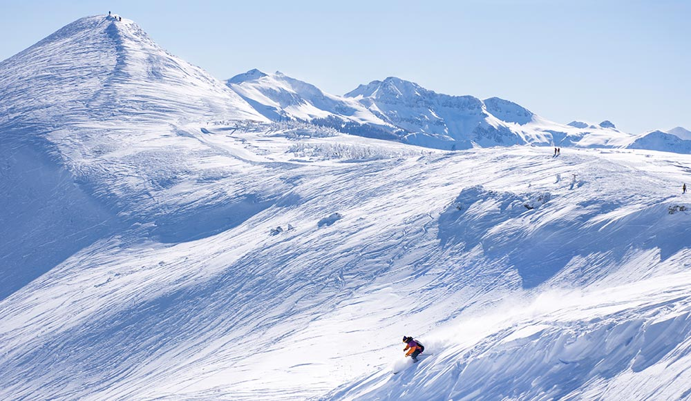

Welcome to the Community Driven Ski Reveiw
About
The goal of this website is to make an community driven website for reviewing Ski Area/Resorts and the towns around them.
By the people for the people.
The goal of this website is to make an community driven website for reviewing Ski Area/Resorts and the towns around them.
By the people for the people.